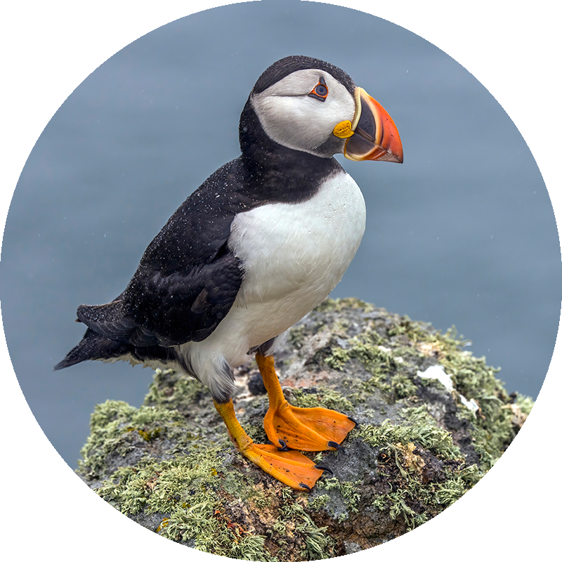

Puffins
 Puffins are any of three species of small alcids (auks) in the bird genus Fratercula. These are pelagic seabirds that feed primarily by diving in the water. They breed in large colonies on coastal cliffs or offshore islands, nesting in crevices among rocks or in burrows in the soil. Two species, the tufted puffin and horned puffin, are found in the North Pacific Ocean, while the Atlantic puffin is found in the North Atlantic Ocean.
Puffins are any of three species of small alcids (auks) in the bird genus Fratercula. These are pelagic seabirds that feed primarily by diving in the water. They breed in large colonies on coastal cliffs or offshore islands, nesting in crevices among rocks or in burrows in the soil. Two species, the tufted puffin and horned puffin, are found in the North Pacific Ocean, while the Atlantic puffin is found in the North Atlantic Ocean.
All puffin species have predominantly black or black and white plumage, a stocky build, and large beaks that get brightly colored during the breeding season. They shed the colorful outer parts of their bills after the breeding season, leaving a smaller and duller beak. Their short wings are adapted for swimming with a flying technique underwater. In the air, they beat their wings rapidly (up to 400 times per minute) in swift flight, often flying low over the ocean's surface.